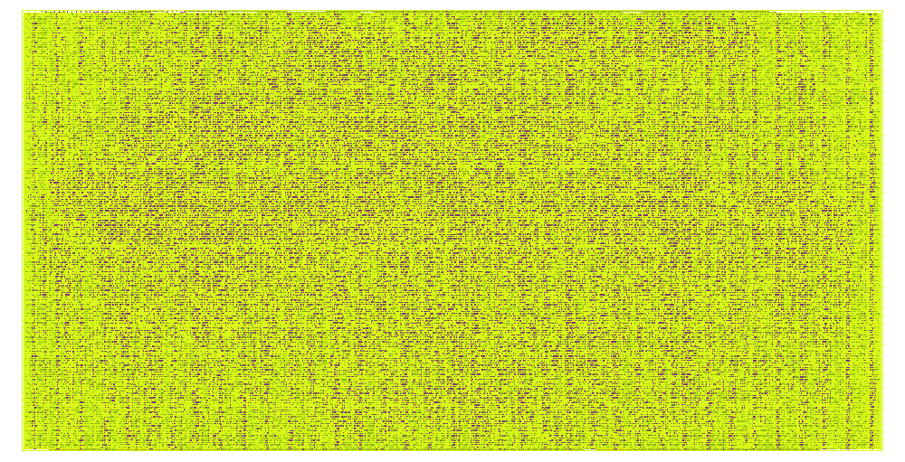

Command-driven execution
The chip is controlled by compact command fields rather than by exposing separate external interfaces for every cryptographic mode.
TinyTapeout • GF180MCU • ASCON
A compact CISC-style cryptographic chip supporting HASH256, XOF, CXOF, XOF-chain, CXOF-chain, and AEAD encryption/decryption through a UART-accessible SDMC interface.
Designed by Dr. Mohamed El-Hadedy, Director of the Reconfigurable Space Computing Lab (RSCL) at Cal Poly Pomona.

Why this matters
This project demonstrates a compact SDMC-CISC cryptographic processor concept: a command-driven architecture that reuses fixed silicon resources across multiple ASCON-family security operations. The implemented chip provides a concrete GF180MCU/TinyTapeout realization with physical layout, post-PnR power data, and a growing performance dashboard.
The architecture direction is broader than one benchmark. It points toward a reusable cryptographic processor style for embedded and resource-constrained systems, where area remains fixed while higher-level cryptographic operations are sequenced by command parameters such as mode, message size, output size, customization string size, and chain count.
Architecture
SDMC-CISC is a compact command-driven cryptographic processor architecture designed to execute several ASCON-family operations through one reusable silicon datapath. Instead of building separate hardware engines for HASH, XOF, CXOF, chained XOF/CXOF, and AEAD, the chip uses a CISC-style control layer that sequences higher-level cryptographic commands over a shared ASCON permutation core.
The architectural idea is fixed-silicon reuse: the same physical datapath supports multiple modes, while mode selection, message length, customization length, output length, and chain count are handled as command parameters. This is why XOF-chain and CXOF-chain increase latency and energy with chain_count, but do not require additional silicon area.
The chip is controlled by compact command fields rather than by exposing separate external interfaces for every cryptographic mode.
HASH256, XOF, CXOF, XOF-chain, CXOF-chain, and AEAD are organized as mode-level operations over one shared hardware foundation.
The chain engine repeatedly feeds the prior output into the next pass, allowing chain_count to scale work without scaling silicon area.
The same silicon resources are reused across modes, so performance and energy scale with operation size while area remains constant.
Architectural contribution
Physical implementation
The chip integrates a UART-accessible SDMC front end, ASCON permutation datapath, XOF/CXOF family core, XOF/CXOF chain engine, and AEAD encrypt/decrypt support.

Power breakdown
Input-size dependent results
Rows currently marked “placeholder” must be replaced with real simulation cycle counts.
Chain modes
Chain modes are shown by chain count, final-output efficiency, and per-pass cost. This is essential because chain_count changes latency and energy even when the final output size is fixed.
Metrics table
Methodology
time_us = cycles / frequency_MHz
energy_nJ = power_mW × time_us
throughput_MBps = processed_bytes / time_us
energy_nJ_per_byte = energy_nJ / processed_bytes
cycles_per_pass = cycles / chain_count
energy_nJ_per_final_byte = energy_nJ / out_bytes